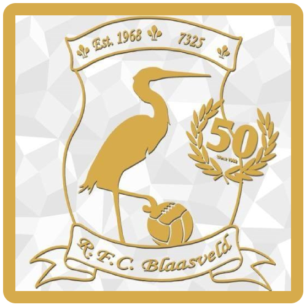

mijn hobbies
Voetbal: Fc Blaasveld
Uitleg: Ik speel hier sinds mijn u10 bij deze ploeg. Dus ik doe deze hobby al lang. De meeste van die jaren dat ik hier speelde, speelde ik hier met Yorbe dus ik ken hem al lang.

Gitaar: Bij Gizon in Elzestraat
Uitleg: Ik speel hier al 2 jaar gitaar en dit noemt gizon want het staat voor gitaar zonder notenleer. Het is elk jaar 2 reeksen dus ik zit nu in reeks 4. We doen ook elk jaar een gizonconcert in de Zwaneberg in Heist-op-den-Berg en een free podium in Café Malvine in Heffen.